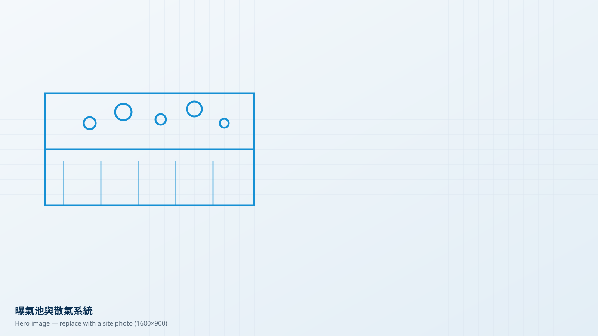
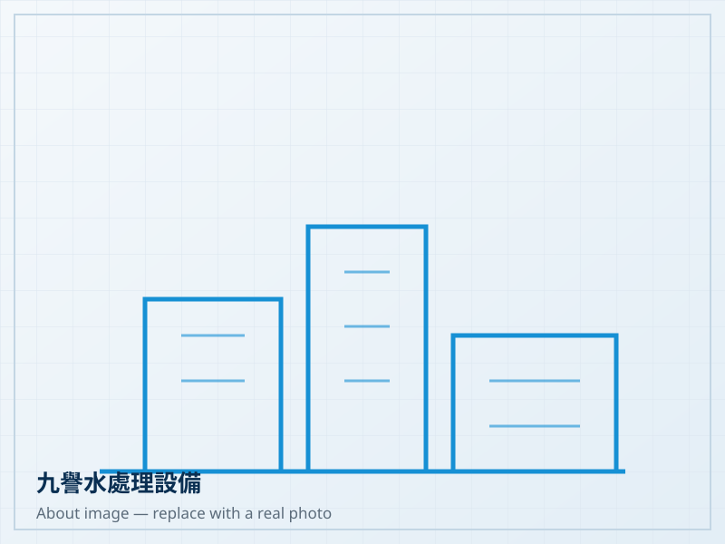
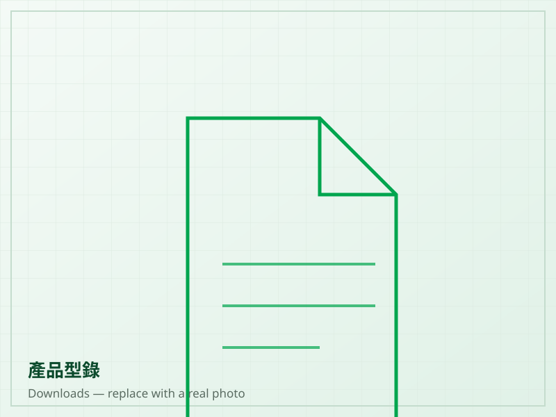

Since 1996
專業水處理設備
專業水處理設備
值得信賴的工程夥伴
Professional Wastewater Treatment Equipment
九譽有限公司自 1996 年起專注於污水處理、曝氣、攪拌與鼓風設備，為國內工程公司與海外客戶提供設備供應與選型支援。
- 成立年份
- 1996
- 自有研發
- 散氣盤 2004 年起
- 海外市場
- 東南亞等地
- 產品範圍
- 曝氣／攪拌／鼓風／污泥
Products
核心產品分類
涵蓋污水處理流程中的曝氣、攪拌、鼓風與污泥處理設備，可依現場條件選型。
About
關於九譽
九譽有限公司創立於 1996 年，為台灣專業污水處理設備供應商。
公司成立初期主要提供台灣製造之污泥脫水機、鼓風機及曝氣設備予國內工程公司，並將相關產品出口至東南亞市場。
隨著市場與客戶需求增加，九譽陸續引進歐美工業設備與水處理產品，同時投入自有產品研發與製造。
在多年污水處理設備實務經驗基礎上，九譽持續開發兼具產品品質、性能與合理價格之水處理設備。

Featured
產品精選
離心式鼓風機／抽風機
Centrifugal Blower & Exhauster
九譽代理 Hoffman & Lamson 離心式鼓風機與抽風設備，適用於污水處理曝氣供氣及各類工業鼓風、抽風系統。
Centrifugal BlowerExhauster
Why Fine Reputation
為什麼選擇九譽
01
專業經驗
Since 1996，累積多年水處理設備相關經驗，熟悉國內工程與海外市場需求。
02
技術整合
團隊背景涵蓋化工、機械、模具製作及水處理設備應用，能從設計端到現場端討論需求。
03
穩定品質
持續透過產品測試與實際客戶使用回饋改善產品，而非僅依賴單次設計定案。
04
合理成本
在產品性能、品質與市場價格之間取得平衡，協助客戶控制專案整體成本。
Applications
應用領域
從使用需求出發，找到適合的設備組合。

正在尋找適合的水處理設備？
請告訴我們現場條件與處理需求，九譽協助您評估合適的設備配置。